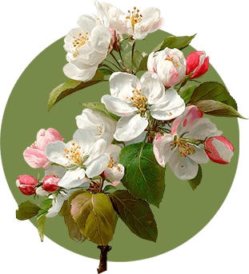

- Mead
- Food
- Friends
An experience like no other
Discover the flavour of the Sunshine Coast
Tucked between moss-covered forests and the gentle tide of the Salish Sea, Foragers is more than a destination. It’s a place to slow down, gather and savour the Sunshine Coast.
Our mead begins with honey from our own hives and the fruit, flowers and botanicals that grow around us. Each batch reflects the land and the season that shaped it. The bloom of wildflowers, the warmth of summer sun, the crisp clarity of coastal autumn.
Here, mead isn’t just a drink.
It’s a story of place.

A celebration of expression
Come for the mead. Stay for what’s shared around the table.
Every pour at Foragers captures a fleeting moment in the seasons. From the first blossoms of spring to the deep gold of late harvest, no two batches are ever quite the same. That’s part of the beauty.
We don’t chase uniformity. We celebrate the expression of land, season and craft. Each glass carries a sense of where it began and the care that brought it to life.
That same philosophy extends to the plate. Our menu follows the rhythm of the coast and the harvest, shaped by what is fresh, local and in season. Ingredients are chosen for character and flavour, then prepared with a deft touch that lets them speak for themselves.
When you visit, that story continues beyond the glass. Mead and food come together at the table, where thoughtful pairings and shared plates invite you to linger, enjoy good company and savour the moment.
Where the story begins
The orchard
Before the meadery, there was the orchard.
Planted on a gentle slope rising from the Salish Sea, the apple trees at Foragers are part of the landscape and part of our craft. These heritage varieties were chosen not for perfect uniformity, but for flavour, resilience and character.

Each tree is a quiet collaboration between soil, sun and season.
In spring the blossoms hum with bees from our apiary.
In summer the branches offer shade and promise.
And in autumn the orchard fills with fruit touched by coastal wind and late-day light.
Some of those apples make their way into our limited releases, adding crisp acidity and subtle complexity to our meads. When you taste them, you’re tasting the orchard itself — its patience, its wild edges and its quiet abundance.
Come harvest season, you may even find our orchard apples at select local farmers markets along the coast.
A place to gather
Around the table
Perched above the orchard and surrounded by forest, the Foragers tasting and dining experience is designed as a place to pause and connect.
Here you’ll find small-batch meads, seasonal plates inspired by the coast and a warm, elegant space made for lingering conversations. Natural textures, soft light and views across the orchard create a setting that feels both grounded in nature and comfortably refined.
Whether you arrive for a tasting flight, a relaxed meal or an evening shared with friends, the experience is simple at heart:
Good food.
Thoughtfully crafted mead.
And moments worth remembering.
Come experience it for yourself
Join us above the orchard for seasonal mead, small plates and an experience shaped entirely by this place.